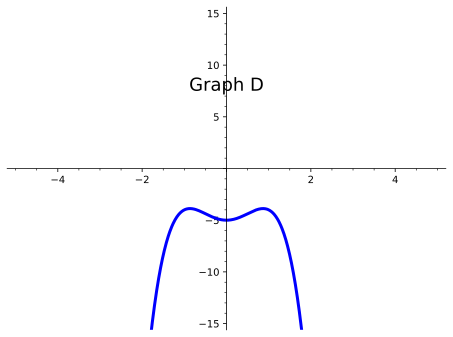

Find the intercepts, estimated locations of maxima and minima, and end behavior of a polynomial function, and use this information to sketch the graph.
Subsection4.5.1Activities
Remark4.5.1.
Just like with quadratic functions, we should be able to determine key characteristics that will help guide us in creating a sketch of any polynomial function. We can start by finding both \(x \) and \(y \)-intercepts and then explore other characteristics polynomial functions can have. Recall that the zeros of a function are the \(x\)-intercepts - i.e., the values of \(x\) that cross or touch the \(x\)-axis. Just like with quadratic functions, we can find the zeros of a function by setting the function equal to \(0\) and solving for \(x\text{.}\)
Definition4.5.2.
The end behavior of a polynomial function describes the behavior of the graph at the "ends" of the function. In other words, as we move to the right of the graph (as the \(x\) values increase), what happens to the \(y \) values? Similarly, as we move to the left of the graph (as the \(x\) values decrease), what happens to the \(y \) values?
Activity4.5.3.
Use the graphs of the following polynomial functions to answer the questions below.
(a)
How would you describe the behavior of Graph A as you approach the ends?
Graph A rises on the left and on the right.
Graph A rises on the left, but falls on the right.
Graph A rises on the right, but falls on the left.
Graph A falls on the left and on the right.
(b)
How would you describe the behavior of Graph B as you approach the ends?
Graph B rises on the left and on the right.
Graph B rises on the left, but falls on the right.
Graph B rises on the right, but falls on the left.
Graph B falls on the left and on the right.
(c)
How would you describe the behavior of Graph C as you approach the ends?
Graph C rises on the left and on the right.
Graph C rises on the left, but falls on the right.
Graph C rises on the right, but falls on the left.
Graph C falls on the left and on the right.
(d)
How would you describe the behavior of Graph D as you approach the ends?
Graph D rises on the left and on the right.
Graph D rises on the left, but falls on the right.
Graph D rises on the right, but falls on the left.
Graph D falls on the left and on the right.
Definition4.5.4.
Typically, when given an equation of a polynomial function, we look at the degree and leading coefficient to help us determine the behavior of the ends. The degree is the highest exponential power in the polynomial. The leading coefficient is the number written in front of the variable with the highest exponential power.
Activity4.5.5.
Let’s refer back to the graphs in Activity 4.5.3 and look at the equations of those polynomial functions. Let’s apply Definition 4.5.4 to see if we can determine how the degree and leading coefficients of those graphs affect their end behavior.
Graph A: \(f(x)=-11x^3+32+42x^2+x^4-64x\)
Graph B: \(g(x)=2x^2+3-4x^3\)
Graph C: \(h(x)=x^7+2x^3-5x^2+2\)
Graph D: \(j(x)=3x^2-2x^4-5\)

(a)
What is the degree and leading coefficient of Graph A?
Degree: \(-64\text{;}\) Leading Coefficient: \(4\)
Degree: \(4\text{;}\) Leading Coefficient: \(0\)
Degree: \(1\text{;}\) Leading Coefficient: \(-64\)
Degree: \(4\text{;}\) Leading Coefficient: \(1\)
(b)
What is the degree and leading coefficient of Graph B?
Degree: \(3\text{;}\) Leading Coefficient: \(-4\)
Degree: \(-4\text{;}\) Leading Coefficient: \(3\)
Degree: \(2\text{;}\) Leading Coefficient: \(3\)
Degree: \(3\text{;}\) Leading Coefficient: \(4\)
(c)
What is the degree and leading coefficient of Graph C?
Degree: \(-5\text{;}\) Leading Coefficient: \(2\)
Degree: \(0\text{;}\) Leading Coefficient: \(7\)
Degree: \(-5\text{;}\) Leading Coefficient: \(3\)
Degree: \(7\text{;}\) Leading Coefficient: \(1\)
(d)
What is the degree and leading coefficient of Graph D?
Degree: \(-2\text{;}\) Leading Coefficient: \(4\)
Degree: \(3\text{;}\) Leading Coefficient: \(2\)
Degree: \(-2\text{;}\) Leading Coefficient: \(4\)
Degree: \(-5\text{;}\) Leading Coefficient: \(4\)
(e)
Notice that Graph A and Graph D have their ends going in the same direction. What conjectures can you make about the relationship between their degrees and leading coefficients with the behavior of their graphs?
(f)
Notice that Graph B and Graph C have their ends going in opposite directions. What conjectures can you make about the relationship between their degrees and leading coefficients with the behavior of their graphs?
Remark4.5.6.
From Activity 4.5.5, we saw that the degree and leading coefficient of a polynomial function can give us more clues about the behavior of the function. In summary, we know:
If the degree is even, the ends of the polynomial function will be going in the same direction. If the leading coefficient is positive, both ends will be pointing up. If the leading coefficient is negative, both ends will be pointing down.
If the degree is odd, the ends of the polynomial function will be going in opposite directions. If the leading coefficient is positive, the left end will fall and the right end will rise. If the leading coefficient is negative, the left end will rise and the right end will fall.
Definition4.5.7.
When describing end behavior, mathematicians typically use arrow notation. Just as the name suggests, arrows are used to indicate the behavior of certain values on a graph.
For end behavior, students are often asked to determine the behavior of \(y\)-values as \(x\)-values either increase or decrease. The statement "As \(x\to \infty\text{,}\)\(f(x)\to -\infty\)" can be translated to "As \(x\) approaches infinity (or as \(x\) increases), \(f(x)\) (or the \(y\)-values) go to negative infinity (i.e., it decreases)."
Activity4.5.8.
Use the graph of \(f(x)\) to answer the questions below.
Figure4.5.9.
(a)
How would you describe the end behavior of \(f(x) \text{?}\)
\(f(x) \) rises on the left and on the right.
\(f(x) \) rises on the left, but falls on the right.
\(f(x) \) rises on the right, but falls on the left.
\(f(x) \) falls on the left and on the right.
(b)
How would you describe the end behavior of \(f(x) \) using arrow notation?
As \(x\to -\infty\text{,}\)\(f(x)\to -\infty\)
As \(x\to \infty\text{,}\)\(f(x)\to -\infty\)
As \(x\to -\infty\text{,}\)\(f(x)\to -\infty\)
As \(x\to \infty\text{,}\)\(f(x)\to \infty\)
As \(x\to -\infty\text{,}\)\(f(x)\to \infty\)
As \(x\to \infty\text{,}\)\(f(x)\to -\infty\)
As \(x\to -\infty\text{,}\)\(f(x)\to \infty\)
As \(x\to \infty\text{,}\)\(f(x)\to \infty\)
Definition4.5.10.
When graphing polynomial functions, you may notice that these functions have some "hills" and "valleys." These characteristics of the graph are known as the local maxima and local minima of the graph - similar to what we’ve already seen with quadratic functions. Unlike quadratic functions, however, a polynomial graph can have many local maxima/minima (quadratic functions only have one).
Activity4.5.11.
Sketch the function, \(f(x)=(x-2)(x+1)(x-3)^2 \text{,}\) by first finding the given characteristics.
(a)
Find the zeros of \(f(x)\text{.}\)
(b)
Find the multiplicities at each zero.
(c)
Find the \(y\)-intercept of \(f(x)\text{.}\)
(d)
Describe the end behavior of \(f(x)\text{.}\)
(e)
Estimate where any local maximums and minimums may occur.
Activity4.5.12.
Sketch the graph of a function \(f(x) \) that meets all of the following criteria. Be sure to scale your axes and label any important features of your graph.
The \(x\)-intercepts of \(f(x)\) are \(0, 2,\) and \(5 \text{.}\)
\(f(x)\) has one maximum at 0. \(f(x)\) has one minimum at \(-5 \) and another at \(-16 \text{.}\)
The end behavior of \(f(x)\) is given as:
As \(x\to \infty\text{,}\)\(f(x)\to\infty\)
As \(x\to -\infty\text{,}\)\(f(x)\to-\infty\)
Activity4.5.13.
Now that we know all the different characterisitics of polynomials, we should also be able to identify them from a graph. Use the graph below to find the given charactertistics.
Figure4.5.14.
(a)
What are the \(x\)-intercept(s) of the polynomial function? Select all that apply.
\(\displaystyle (1, 0) \)
\(\displaystyle (-1, 0) \)
\(\displaystyle (2, 0)\)
\(\displaystyle (0, -2) \)
(b)
What are the \(y\)-intercept(s) of the polynomial function?
\(\displaystyle (1, 0) \)
\(\displaystyle (-1, 0) \)
\(\displaystyle (2, 0)\)
\(\displaystyle (0, -2) \)
(c)
How many zeros does this polynomial function have?
\(\displaystyle 0 \)
\(\displaystyle 1 \)
\(\displaystyle 2 \)
\(\displaystyle 3 \)
(d)
At what point is the local minimum located?
\(\displaystyle (2, -4) \)
\(\displaystyle (-1, 0) \)
\(\displaystyle (-2, 0)\)
\(\displaystyle (1, -4) \)
\(\displaystyle (2, 0) \)
(e)
At what point is the local maximum located?
\(\displaystyle (2, -4) \)
\(\displaystyle (-1, 0) \)
\(\displaystyle (-2, 0)\)
\(\displaystyle (1, -4) \)
\(\displaystyle (2, 0) \)
(f)
How do you describe the behavior of the polynomial function as \(x\to \infty\text{?}\)
the \(y\)-values go to negative infinity
\(\displaystyle f(x) \to \infty\)
the \(y\)-values go to positive infinity
\(\displaystyle f(x) \to -\infty\)
(g)
How do you describe the behavior of the polynomial function as \(x\to -\infty\text{?}\)
the \(y\)-values go to negative infinity
\(\displaystyle f(x) \to \infty\)
the \(y\)-values go to positive infinity
\(\displaystyle f(x) \to -\infty\)
Activity4.5.15.
Use the given function, \(f(x)=(x+1)^2(x-5) \text{,}\) to answer the following questions.
(a)
What are the zeros of \(f(x) \text{?}\)
\(\displaystyle -1, -5 \)
\(\displaystyle -1, 5 \)
\(\displaystyle 1, -5 \)
\(\displaystyle 1, 5 \)
(b)
What are the multiplicities at each zero?
At \(x=-1\text{,}\) the mulitplicity is even.
At \(x=5\text{,}\) the mulitplicity is even.
At \(x=-1\text{,}\) the mulitplicity is even.
At \(x=5\text{,}\) the mulitplicity is odd.
At \(x=-1\text{,}\) the mulitplicity is odd.
At \(x=5\text{,}\) the mulitplicity is even.
At \(x=-1\text{,}\) the mulitplicity is odd.
At \(x=5\text{,}\) the mulitplicity is odd.
(c)
What is the end behavior of \(f(x) \text{?}\)
\(f(x) \) rises on the left and on the right.
\(f(x) \) rises on the left, but falls on the right.
\(f(x) \) rises on the right, but falls on the left.
\(f(x) \) falls on the left and on the right.
(d)
Using what you know about the zeros, multiplicities, and end behavior, where on the graph can we estimate the local maxima and minima to be?
(e)
Now look at the graph of \(f(x)\text{.}\) At which zero does a local maximum or local minimum occur? Explain how you know.
Remark4.5.16.
We can estimate where these local maxima and minima occur by looking at other characteristics, such as multiplicities and end behavior.
From Activity 4.5.15, we saw that when the function touches the \(x\)-axis at a zero, then that zero could be either a local maximum or a local minimum of the graph. When the function crosses the \(x\)-axis, however, the local maximum or local minimum occurs between the zeros.